Flourishes are certain movements with the cards that do not come under the heading of sleights, since they are done openly. In general they are used to show elegance in handling the cards. Sometimes, however, they serve a more useful purpose, that of misleading the audience as to the moment when an effect is really brought about. Used in moderation they are a decided asset to the card conjuror, but when carried to extreme lengths they defeat the very object that the magician should always have in mind, namely, that the effects he or she produces are done by magic and not by skill. A series of brilliant flourishes leaves only the impression of juggling skill on the minds of the onlookers, and the performer's feats are dismissed by them with the remark, 'He's clever with his hands.' The simple flourishes which follow are legitimate, for some of them are already in fairly general use among card players.
Displaying the Top Card
A. For Intimate Performances
Instead of taking the card off the pack with the right hand to show it to the onlookers, make the following moves:
1. Hold the pack in the left hand in dealing position.
2. Push the top card off about 25 mm (1 in) to the right with the left thumb.
3. Bend the top phalanx of the index finger under the card, near the upper right corner, and bend the same phalanx of the middle finger on the back of the card, which is thus gripped between the two fingers (figure 20). Insert the tips of the ring and little fingers under the card and with them grip the rest of the pack.
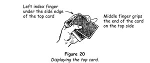
4. Extend the index finger and middle finger, carrying the card away to the right and turning it face upwards in the action. At the same time press the thumb on the back of the pack
(figure 21).
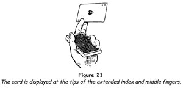
This pretty little flourish can be used to good advantage for counting off a small number of cards when it is necessary to name them as they are counted. Each card is taken by the right hand as it is flicked off and turned face upwards by the left hand.
B. For Intimate Performances
When a chosen card has been found, for example after dealing to a certain number or on the last letter after having spelled its name, the following is a neat method of displaying it.
1. Push the card off with the left thumb and take it by the middle of its right side between the top phalanxes of the right middle finger on its back and of the ring finger on its face (figure 22).
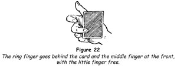
2. Place the tip of the right thumb on its face and turn the card to a vertical position between the tips of the thumb and middle finger, bringing the face of the card towards you (figure 23).
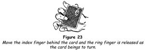
3. Place the tip of the index finger on the face of the card and move the thumb to the back. Release the middle finger and revolve the card with your thumb, bringing its face outwards and towards the spectators (figure 24).
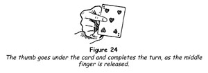
This intriguing little flourish provides a momentary pause and thus heightens the climax, which is the revelation of the card. Also, since it brings the face of the card towards you first, you gain a precious moment in the event of a mishap (which should be a very rare occurrence, but accidents will happen to the most careful of card conjurors).
C. For Platform Performances
1. Push the card off with the left thumb and grasp it at the inner top corner between the right thumb and index finger, holding as little of the card as possible.
2. Move the card slowly to your right, so that it does not obscure your face. Hold it at about shoulder height, turning it vertically to face outwards.
The Ruffle
The object of this flourish is to produce a crackling sound with the cards at the moment some feat of magic is accomplished. The purpose is to mislead the audience into the belief that the feat is actually done at that moment.
A. With Both Hands
1. Hold the pack in the left hand, as for dealing, but with its outer end protruding about 25 mm (1 in) over the index finger.
2. Press the left thumb firmly down on the middle of the back of the top card and with the tip of the right middle finger bend the outer ends of all the cards upwards about 25 mm (1 in) (figure 25).
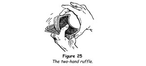
3. Release the ends of the cards by drawing the right hand away sharply. Being freed thus in rapid succession, the cards strike one against the other and produce the sharp crackling sound required.
Some performers get into the habit of using this flourish almost continuously with neither rhyme nor reason. This is not only inartistic but also irritating to the audience, and it betrays nervousness on the part of the performer. The flourish should be used only for the purpose of misleading the onlookers as to the moment when a certain effect is supposed to take place.
B. With One Hand
1. Hold the deck in the left hand as for dealing.
2. Bend the index finger under the deck and with the first phalanx of the middle finger bend the cards downwards towards the palm of the hand.
3. Allow the cards to slip off the tip of the middle finger by bending the finger inwards, producing a prolonged crackle (figure 26).
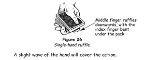
A slight wave of the hand will cover the action.
C. With a Single Card
Sometimes it is desirable to produce a similar sound with one card - for example, when one card is apparently changed to another. To do this, hold the card in either hand between the index finger and thumb. Rest the other three fingers, one above the other on the index finger. To produce the required sound, press the three fingers inwards and let them escape and strike against the card in rapid succession (figure 27).
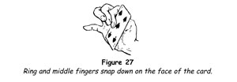
The Click
A single sharp clicking sound can be produced at any moment desired in the following way.
1. Hold the pack in the left hand as for dealing.
2. Bend the ring finger under the deck and with the tip of the little finger bend two or three of the bottom cards downwards and inwards against the bent ring finger (figure 28).
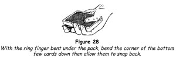
3. Press outwards with the ring finger and let the cards escape by moving the little finger away. A sharp click will be heard as the cards strike against the bottom of the deck.
Spread and Turnover
A. On a Cloth-covered Table
This flourish has a very pretty effect as a preliminary to the execution of an opening trick. The cards are spread on the table in a row showing the backs, then they are turned over simultaneously to show the faces.
Two conditions are required for perfect results: first, the table used must have a cloth on it to provide the necessary friction to prevent the cards from sliding; second, the cards themselves must be in good condition.
1. Place the pack on the table towards your right, the sides parallel to the edge of the table nearest you.
2. With a swift movement of the right hand to the left, pressing down slightly on the top card, spread the cards, thus causing a separation of about 25 mm (1 in) between each card and the one following it (figure 29).
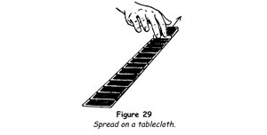
3. Slip the index finger of the right hand under the card at the extreme right and turn it over in the direction in which the cards lie. This action will cause all the other cards to turn over.
When facility has been acquired in spreading the cards in a fairly long line, the knack of spreading them in an arc of a circle will give you little trouble. The effect of the turnover is then much prettier.
The spread may be used for a very attractive flourish, first described by Robert-Houdin in The Secrets of Conjuring and Magic (1868). A comparatively recent addition makes the little feat even more effective.
1. After spreading the cards in a long line on the table lengthways, in such a way that about two-thirds of each card is covered by the one above it, slip the right index finger under the first face-down card.
2. Turn this card to an upright position.
3. Take one card in the left hand, hold it vertically with its sides parallel to the table top and place the middle of its lower side on the top edge of the upright card (figure 30).
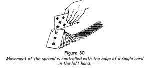
4. Draw this card towards the left, pressing it lightly on the top edge of the other cards as they move up into a vertical position. All the cards turn over in succession.
5. On reaching the other end of the line, do not let the cards fall flat. Move the card in the left hand back in the opposite direction and turn the line of cards face downwards as at the start.
If the cards have been spread carefully, the flourish may be repeated several times before letting the cards fall flat in their original position. The effect is intriguing.
B. On a Bare Table
1. Grasp the pack at the ends between the right thumb and the middle and ring fingers, pressing the tip of the index finger on the middle of the pack.
2. Pull the ends of the deck upwards with the thumb and two fingers, at the same time pressing downwards with the index finger.
3. Place the pack on the table so that only the middle part of the bottom card touches the table surface (figure 31).
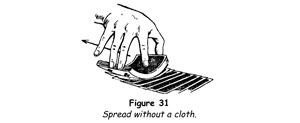
4. Move the cards from left to right swiftly, allowing the ends to slip off the tips of the fingers and thumb, and at the same time maintaining the pressure of the index finger on the back of the top card. The result will be the formation of a perfect and symmetrical ribbon of cards, accompanied by a light riffling sound, which is very effective. The length of this ribbon spread of cards will be governed by the amount of pressure exerted by the index finger.
Note that in this case the cards are spread sideways, not lengthways. The method may also be used on a cloth-covered table. It is excellent for use when a card is reversed at or near the bottom of the pack. In starting the spread, let half a dozen cards slip off the thumb and fingers before moving the hand, so that these cards will be bunched together and prevent the reversed card from being seen. The onlookers will automatically be convinced that all the cards are face downwards without your commenting on this fact.
Gathering the Ribbon-Spread Pack
When the cards have been spread, turned face upwards and face downwards again or ribbon-spread for the selection of a card, the whole pack can gathered with a rapid sweep of the right hand. To do this, slip the fingers of the right hand under the lowermost card at the extreme end of the line and slide it under all the others, following the line of the pack. The cards are all brought into the hand, the thumb falling on the last card.
The action can be made as rapidly as you wish with perfect safety.
Springing the Cards
This is a favourite flourish with card conjurors and when well done the effect is brilliant. With the hands held apart the cards are made to leap from one hand to the other.
1. Hold the pack in the right hand, by the ends, between the thumb and the middle and ring fingers.
2. Bend the cards by squeezing on the ends, so that the convex side of the pack is towards the inside of the hand. They will then naturally tend to spring from the fingers.
3. Place the left hand about 15 cm (6 in) away from the right hand, in position to catch the cards; continuing the pressure on the pack, allow the cards to escape, one by one, and catch them in the left hand (figure 32).
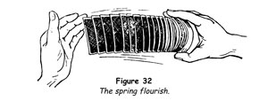
The distance between the hands can be increased with practice, and the flourish should be accompanied by a swing of the body towards the left, so that the hands describe the arc of a circle. The right hand should follow the last card and be brought against the cards in the left hand with a loud smack.
A Flourish Count
This is a striking method of counting a small packet of cards.
1. Hold the packet vertically in the left hand between the crotch of the thumb and the outermost joint of the middle finger.
2. Push the top card to the right with the tip of the left thumb, pivoting it on the middle finger at the middle phalanx, until it projects at right angles from the packet (figure 33).
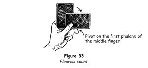
3. Remove this card and repeat for each remaining card.
Throwing a Card
It is often necessary to throw a card or cards out to the audience. When this is done with neatness and precision it creates a marked impression of the performer's dexterity. The flourish depends on a little knack by means of which the card is made to revolve rapidly in its own plane.
1. Hold the card in your right hand, near the outer end, between the forefinger and the middle finger (figure 34).
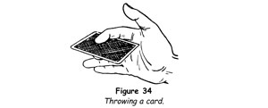
2. Draw the hand back near the left breast, bending the wrist inwards. Extend the arm rapidly, letting the card go but at the same moment giving it a spinning motion by a sharp backwards jerk of the hand. It is this spinning motion in the card's own plane that carries the card to a distance; otherwise the resistance of the air would cause it to fall at your feet.
When throwing cards to an audience, slant them upwards so that, their velocity expended, they flutter down on the spectators.
By starting the throw at an upward angle of about 45 degrees and throwing the card only a couple of yards, the card can be made to return to your hand so that you can catch it with the tips of the fingers. This very pretty effect, known as the boomerang card, is the basis of several fine tricks with cards.
Waterfall Shuffle
This is a flourish applied to the riffle shuffle. It has come into common use among card players and its use by the card conjuror is therefore entirely justified.
1. Proceed exactly as described for the riffle shuffle, interlacing the ends of the two packets for about 12 mm (½ in).
2. Place the thumbs on the back of the packets at the point of junction and slide the middle, ring and little fingers under the outer ends of the packets, at the same time moving the hands towards each other and bending the packets (figure 35).
3. Raise the hands and the pack about breast high, maintaining the pressure of the thumbs and fingers; then, by slightly relaxing the pressure of the hands on the outer ends of the cards and at the same time continuing the downward pressure of the thumbs, allow the cards to fall from the bottom separately on to the fingers of both hands held together (figure 36).
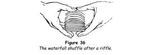
In making the preliminary shuffle the cards should be allowed to fall as nearly as possible in regular rotation, a card from one hand falling on a card from the other. The cards should be interlaced just sufficiently to be held in position by the thumbs, for the higher the arch that is formed the longer and more effective the fall of the separate cards becomes.
The Fan
This useful method of displaying cards also makes possible a very fine card control and force.
1. Hold the pack in the right hand at the inner end, between the index and middle fingers at the face and the thumb at the top, all the fingers parallel to the inner end.
2. Place the left hand at the outer end in the same position, the fingers below and the thumb above and parallel to the end (figure 37). Spread the cards in an arc with the right thumb as the left fingers draw the cards to the left, the bottom cards being the last to be fanned. Straighten the right fingers so that the cards will pass over them as they are fanned. The completed fan appears as in figure 38.
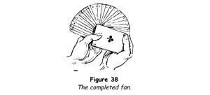
One-hand Fan
This surprising flourish is particularly effective, the cards spreading into a wide fan in a flash. It may be performed with either hand.
1. Hold the pack vertically in the right hand, between the middle phalanxes of the middle and ring fingers at one end and the thumb at the other. Rest the index and little fingers lightly at the side (figure 39).
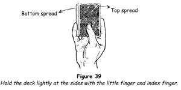
2. Hold the pack upright by a pressure of the fingers at the sides and remove the thumb, placing its tip at the middle of the back.
3. Remove the index and little fingers, grasping the pack between the tips of the ring and middle fingers at the face and the thumb at the back.
4. Spread the cards in a fan by an opposite pressure of the thumb and fingers very similar to that used in snapping the fingers. When the cards are completely fanned they are grasped by the index finger only, at the face, with the fan resting along the palm and the length of the thumb at the back.
A reverse action closes the fan, bringing it to its original position.
The knack of making the one-hand fan is not easily acquired, but as with all things, practice makes perfect.
Thumb Fan
This graceful flourish should be performed with cards in good condition. It is not only pretty to see, but also makes possible a version of the famous diminishing cards trick.
1. Hold the pack at one end between the left thumb, above, and the index finger, below.
2. Place the right hand over the pack and press the tip of the thumb firmly against the left side near the outer corner.
3. Sweep the thumb in a circle to the right, drawing the top cards with it and spreading those below them in a fan. The thumb exerts a diminishing pressure, as it sweeps to the right, which is quickly learned.
A small fan is formed by placing the tip of the left thumb at the inner right corner in grasping the pack. A larger fan is made by placing the thumb at the inner left corner. To make a rosette, place the thumb at the centre of the pack.
By securing one of the modern, colourful bridge packs, many pleasing patterns can be formed by fanning the cards by this method and by grasping the pack at the four corners - in which case, when the outer corners are grasped, the fan is made in reverse, that is, by moving the thumb from right to left.
Pressure Fan
This modern two-handed method of making a fan ensures an absolutely symmetrical fan.
1. Hold the pack at the ends between the right thumb and the middle and ring fingers, the first finger curling at the top (figure 40).
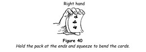
2. Place the pack in the crotch of the left hand, the tip of the left thumb resting on the inner left corner at the back, the index finger slanting diagonally across the face of the pack.
3. Bend the cards downwards over the left index finger and spread them in a fan by sweeping the right hand in a circle to the right, allowing the cards to slip from under the fingertips (figure 41).
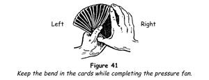
This handsome flourish is useful in offering the cards for choice.